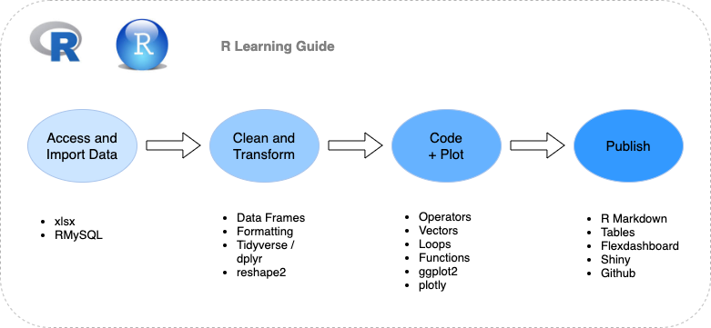
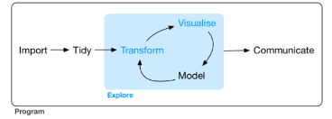

| Session | Table of Contents | Est. Duration |
|---|---|---|
| 1 | Introduction to R | 1 hour |
| 2 | The RStudio Environment | |
| 3a | Coding - Arithmetic Operators | |
| 3b | Coding - Operators, Vectors, Matrices and Lists | |
| 3c | Coding - Data Frames | |
| 3d | Coding - Loops and Functions | |
| 3e | Coding - Formatting | |
| 4 | Graphs | |
| 5 | Accessing Data | |
| 6 | dplyr | |
| 7 | R Markdown | |
| 8 | Flexdashboard and Shiny | |
| 9 | Publishing to Github |
Note: this tutorial and notes are not designed for self-learning.
R Data Exploration Workflow

Source: R for Data Science https://r4ds.had.co.nz/explore-intro.html
There are many R programming IDEs (Integrated Development Environment) and editors. Select one or more that best meet your requirements – for example, the type of license best suited for your environment, budget, platform, R-specific/multi-language, feature strength and integration with other programs.
• RStudio
• R Tools for Visual Studio
• ESS
• Microsoft R Open
• Architect
• Eclipse StatET
• R AnalyticalFlow
• Rattle
• R-Brain
Throughout this tutorial, we will use RStudio.
If you already have RStudio installed previously, you can go to Help > Check for Updates to install the latest version. Re-installation is required but you do not need to uninstall the old version.
Open file “Session 1 - Workflow Demo.Rmd”
Load packages
library(ggplot2)
library(reshape2)
library(readxl)
Import Data into ae_pop dataset
ae_pop <- read_xlsx(“/Users/user/Documents/REnv/World_Population.xlsx”,
sheet = “Asia-Europe”)
Transform Data Structure
ae_pop <- melt(ae_pop)
colnames(ae_pop) <- c(“Region”, “Year”, “Population”)
Plot a Graph using ae_pop Dataset
ggplot(ae_pop, aes(x=Year, y=Population, fill=Region))+
geom_point(aes(color=Region))+
scale_x_discrete(labels = NULL)+
scale_y_discrete(labels=NULL)
Create a new data frame and plot a pie chart
ae_pop1 <- ae_pop[ae_pop$Year==2020,c(1,3)]
ggplot(ae_pop1, aes(x="“, y=Population, fill=Region))+
geom_bar(stat=”identity“)+
coord_polar(”y",start=0)
Summarise some data
summary(ae_pop)
Knit this file to send output to HTML, Word, PowerPoint or PDF
For PDF, install LaTex first.